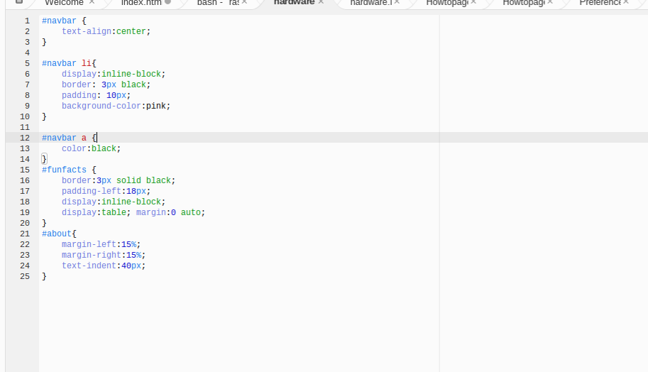
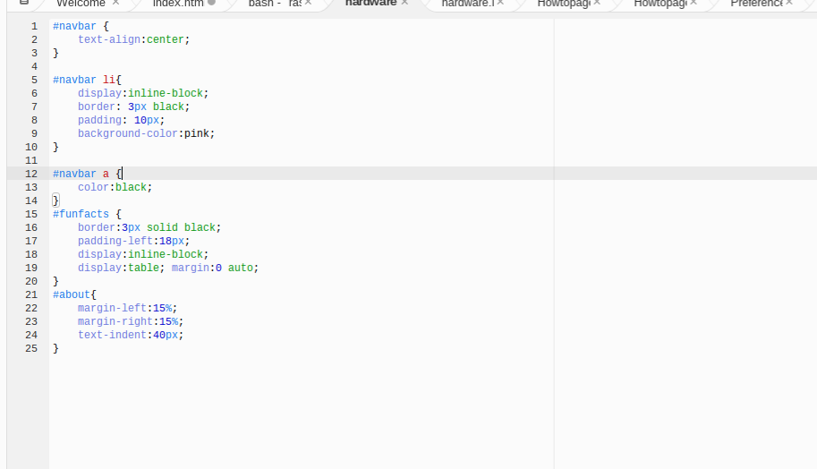

How I created the Hardware Page-
To create the Hardware page I had to go through the basic understandings of html. and css. The first thing I learned was to create new tags, you start a tag with a bracket that looks like this-<>and a closing tag like this-. There is a variety of types of tags like how to form a paragragh, you insert a p inside of those brackets. If you would like a big header, it would have a h1 inside of the brackets. So to get started on how I created the Hardware Pages, the first thing I did was, I created a html. and a css.for the hardware page. After I did that I put in the basic doctype information which is in the image displayed. I wanted to display what they specificaly look like, So I decided to add an image for all of the parts of a computer that I was mentioning. In the image displayed below, I showed how every page starts. Then to personalize the information and add more text The complicated part about coding a page for a beginer especially me is adding images, and how to align the photos. Something that I thought was really interesting while creating this page was the linking of the images, like I mentioned earlier. The most important thing showed in the image link was putting the pixels to display how big the image is displayes as, and choosing where the image is displayed like it could be linked to move to the right or to the left. In my Hardware page, I decided to break the text so it looks more organized. The way I did that was adding a bracket with the text "br" inside of it.
 
